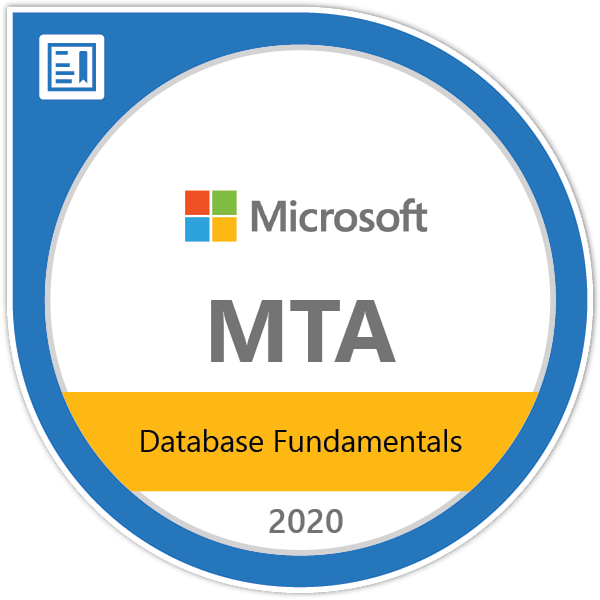
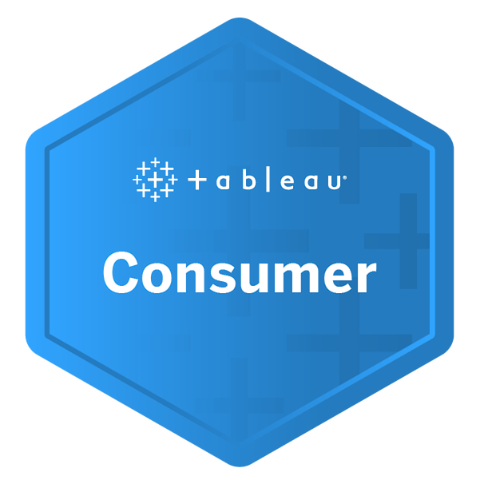

Kishan Y. Narotam
Senior Associate at Ernst & Young
KEY SKILLS
Time & Self Management
Communication
Leadership
Complex Problem Solving
Analytical Skills (Business and Data)
Software Development
Team Management
EDUCATION
Master of Business Administration (MBA)
in Business Analytics
Universidad Catolica San Antonio de Murcia (UCAM)
Murcia, Spain
2022
Postgraduate Extended Diploma in
Business Management (PGDM)
Cambridge International Qualifications
UK
2021
Bachelor of Science in Engineering (Electrical)
Information
University of the Witwatersrand
Johannesburg, South
Africa
2019
IEB
National Senior Certificate with Advanced Programme Mathematics
St John's College
Johannesburg, South Africa
2012
INDUSTRIES
Logistics & Market Research
Education & Training
ICT (Information & Communication Technologies)
Engineering
Insurance
Banking
DEMOGRAPHICS
Gender · Male
Disability · None
Race · Indian
Languages · English (Native), Afrikaans (Proficient)
TOOLKIT
Software Development
SQL · Python · HTML · MATLAB · C++ · Java · CSS · NodeJS · Assembly · VBA
Project Management
Scrum · Kanban · Microsoft Project · Trello · Jira · Test Driven Development
Databases
MYSQL · Microsoft Access · Netezza
Continuous Integration
Git · GitHub
Business Intelligenve
Microsoft Excel · Power BI · Tableau · Flourish · Alteryx
Technical Writing
LaTeX · Microsoft Word · Microsoft PowerPoint · Microsoft Outlook · Microsoft Visio
Graphical Editing
Adobe Premiere Pro
CERTIFICATES
Chartered Management Institute, UK
Certified Manager
Programme ·  · 31 January 2022
· 31 January 2022
Toastmasters International
Certificate of
Proficiency: Leadership Development ·  ·
·  · 16 September 2021
· 16 September 2021
IBM (Coursera)
Data Science Professional Certificate (IBM Data Science) ·  ·
·  · 16 January 2021
· 16 January 2021
Data Science
Foundations Specialization (Introduction to Data Science) ·  ·
·  · 08 December 2020
· 08 December 2020
Applied Data Science Capstone ·  ·
·  · 16 January 2021
· 16 January 2021
Machine Learning with
Python ·  ·
·  · 14 January 2021
· 14 January 2021
Data Visualization with
Python ·  ·
·  · 26 December 2020
· 26 December 2020
Data Analysis with
Python ·  ·
·  · 24 December 2020
· 24 December 2020
Databases and SQL for
Data Science ·  ·
·  · 08 December 2020
· 08 December 2020
Python for Data
Science and AI ·  ·
·  · 01 December 2020
· 01 December 2020
Data Science
Methodology ·  ·
·  · 20 November 2020
· 20 November 2020
Tools for Data
Science ·  ·
·  · 17 November 2020
· 17 November 2020
Data Science
Orientation (What is Data Science?) ·  ·
·  · 10 November 2020
· 10 November 2020
Microsoft
MTA: Database Fundamentals - Certificate 2020 ·  · 15 September 2020
ICAgile
ICAgile
Certified Professional ·  · 04 May 2020
· 04 May 2020
Tableau
Tableau Author ·  ·
29 May 2020
·
29 May 2020
Tableau Consumer ·  · 26 May 2020
IQbusiness
UX Design Bootcamp ·  ·
21 August 2020
·
21 August 2020
UiPath Academy
RPA
Business
Analyst Foundation ·  · 12 May 2020
· 12 May 2020
RPA Starter
Training ·  · 03 March 2020
· 03 March 2020
Udemy
The Project Management Course: Beginner to PROject Manager ·  · 25 October 2020
· 25 October 2020
Statistics for Data Science and Business Analysis ·  · 20 October 2020
· 20 October 2020
The Complete Power BI Practical Course 2020 ·  · 08 July 2020
· 08 July 2020
The Business
Intelligence Analyst Course 2020 ·  · 19 June 2020
· 19 June 2020
Complete
Introduction to Business Data Analysis ·  · 09 March 2020
· 09 March 2020
ECDL Foundation
International
Computer Driving Licence (ICDL) ·  · 04 May 2012
· 04 May 2012
PROFESSIONAL PROFILE
Kishan's primary role is a Senior Associate specialising in Data and Analytics at Ernst & Young (EY) within the Custom Analytics team, and has an always learning mentality and seeks to deepen his knowledge in the world of data science, advanced analytics, and business intelligence. Kishan's secondary role is that of a Youth Advisory Board Lead at Sea-Stematic Pty Ltd., Africa's first cultivated seafood start-up, where his role is focused on understanding new generational mindsets, as well as working with the CEO in using data and analytics to create strategic roadmaps and decisions for the company. His approach to work is methodical and analytical and seeks to provide maximum value when taken into his roles as a Product Owner, Data Analyst, and Team Lead.
WORK EXPERIENCE
Senior Associate
Ernst & Young
01/07/2022 - Current
- Defining the learning plan for all members of the Custom Analytics team for all levels of seniority.
- Successfully implemented an interactive dashboard to be used in tracking and managing all learnings within the team.
- Assisting the Audit team in optimising their reconciliations through various tools and technologies.
Youth Advisory Board Lead
Sea-Stematic Pty Ltd.
01/10/2021 - Current
- Coordinated with CEO on using data and analytics in making various strategic decisions.
- Enhanced the venture capitalist framework through research on current trends, generational habits, as well as industry norms through data collection and analysis.
- Created a data bank for the strategic team enabling seamless access of information used for decision-making.
Principal Consultant
IQbusiness | Johannesburg, South Africa
29/07/2021 - 21/06/2022
- Consulting to Nedbank Group Limited as a Product Owner to the unsecured lending data team as well as a Data and Business Analyst.
- Headed the initiative to improve the overall end-to-end documentation, by creating, developing, and publishing an inclusive data team handbook.
- Successfully delivered a high-level business requirements template, adapted and utilised for all teams to streamline communication and requirements.
- Orchestrated the analysis, development, and documentation of data migration initiatives as well as an end-to-end dashboard initiative.
- Oversaw the initiative and lead the development of the IQbusiness Data Team's Community of Interest on data analysis and advanced analytics.
- Oversaw the performance and development of a Senior Associate Consultant as a Line Manager/Team Lead.
Senior Associate Consultant
11/02/2021 - 29/07/2021
- Consulted to Nedbank Group Limited as a Data Analyst within the Ghost Team in optimising the overall data management process.
- Capitalised on the value added by the data team by sourcing, cleaning and creating baseline metrics from raw data in order to develop a report and interactive dashboard, presented and utilised by both business and technical stakeholders.
- Analysed the processes and implementations in order to deliver documentation on the data governance ensuring compliance of the POPI Act.
Associate Consultant
29/01/2020 - 11/02/2021
- Successfully performed the roles of a Business Analyst on an internal Talent Management project as well as a external client project.
- Executed the role of a Data Analyst for Genex Insights handling and boosting client relationships with their largest client, MultiChoice Africa
- Operated within Absa Group Limited's Model Risk space as an Analyst, successfully analysing roles, current processes and potential areas of optimisation that would lead to a tactical journey in 2021.
Teaching Assistant
University of the Witwatersrand | Johannesburg, South Africa
07/2019 - 10/2019
07/2018 - 10/2018
- Successfully applied and returned as a Teaching Assistant for the Software Development II course.
- Assisted the lecturer in grading student projects, laboratories and coding tutorials.
- Assisted the lecturer in running, executing and demonstrating practical laboratories and tutorials.
- Ensured thorough understand of C++, GitHub, SFML, and Git collaboration.
- Aided multiple students throughout the course with regards to project work, assignments and tests.
Intern (Part-Time)
Liberty Group South Africa| Johannesburg, South Africa
30/05/2016 - 31/07/2017
- Worked within the IT department assisting the head of department in various projects.
- Successfully collected, cleaned, and populated data for internal search engine.
- Created and developed a network map that can be maintained and updated with ease.
- Successfully executed tasks requiring VBA, Excel and C++ skills in system analysis and data management.
Intern
MICROS South Africa (Pty) Ltd | Johannesburg, South Africa
26/06/2015 - 03/07/2015
- Analyse C# code and translate it into C++.
- Design and implement a basic user interface for an Airtime application based off the translated code.
PROJECT EXPERIENCE
Product Owner, Data Analyst, Business Analyst · Ghost Squad
Nedbank Group Limited| Johannesburg, South Africa
01/02/2021 - 21/06/2022
Project Overview: The Ghost ecosystem is responsible for unsecured lending in Nedbank, namely credit cards, personal loans, overdrafts and home loans. The overall objective is to optimise the pipeline and its environment to ensure improved efficiency and monitoring while complying to regulations, as well as implementing various procedures that form a part of the end-to-end pipeline of the product.
Responsibilities: Kishan initially coordinated the creation of a holistic document that entails detailed explanations and process diagrams and details of the Ghost pipelines' procedures, acting as an internal Google. His analytical work further included optimisation implementations, documentation, ensuring the pipeline is compliant to various data governance, dashboard creation, and ad-hoc investigations. Kishan was further trusted to execute the role of a business analyst and as of February 2022 was made the Product Owner of the Ghost data team.
Analyst · Model Risk Data Discovery and Design
Absa Group Limited| Johannesburg, South Africa
27/07/2020 - 11/12/2020
Project Overview: The model risk architecture and processes for credit regulatory reporting are sub-optimal in terMicrosoft of business efficiencies being realised across the value chain. The project team developed a target state architecture and roadmap identifying opportunities for unlocking sustainable efficiency. Subsequently, the project team took the various stakeholders through various roadshow presentations to gain valuable buy-in on the identified opportunities and created a project charter for the initiatives.
Responsibilities: Kishan was an analyst supporting the team in a variety of manners. In the first phase of the project, Kishan defined various role profiles for stakeholders in the model risk space, mapped out necessary frameworks, policies and standards for a clearer understanding. In the subsequent phase, Kishan assisted in creating a project charter for a tactical journey that will occur in 2021, identifying benefits and associated metrics.
Data Analyst · MultiChoice Africa
Genex Insights | Johannesburg, South Africa
09/03/2020 - 31/07/2020
Project Overview: The project involved working on the MultiChoice Africa account within the CX team, where the data's integrity had to be investigated and monitored. In conjunction to this assisting the team in applying various methodologies that would allow the team to become more proactive in handling the account, and to improve relationships between the MultiChoice Africa and Genex Insights.
Responsibilities: Kishan was placed as a Data Analyst within the Genex Insights’ CX team initially investigating a data discrepancy issue, utilising the Genex Insights VOC platform to assist with data retrieval, mapping & managing for MultiChoice Africa. Kishan also updated & created new dashboard views for surveys that had existed & were introduced respectively. Kishan's understanding of the platform gave him the opportunity to train new MultiChoice members on using the platform, while handling queries daily.
Business Analyst · IQbusiness Talent Management Solution
IQbusiness | Johannesburg, South Africa
06/02/2020 - 25/02/2020
Project Overview: IQbusiness required a proposal for a solution which would aid in the improvement of their current talent management processes, allowing employees and managers to monitor personal development and talent.
Responsibilities: Kishan was part of the business requirements team, whose responsibility was focused on creating the business requirements document, by consolidating prior teaMicrosoft work. Kishan was also part of the governance team and took control of consolidating the project initiation document for the final proposal, as well as presenting the final proposal.
Business Analyst · IAM AfricaAccess | CSO Testing Proposal
Absa | Johannesburg, South Africa
30/01/2020 - 04/02/2020
Project Overview: The IAM project was an enhancement on Absa's existing Access Management System, which looked into adding an amend capability. The testing project looked at proposing an idea for a separate testing team to be created within Absa's CSO team.
Responsibilities: Kishan worked as a junior business analyst, and his responsibilities involved creating the initial draft of the business requirements document. The testing project involved creating a proposal for the testing team based on research and best practices.
Lead Engineer · Design of a Thermally Controlled System for Medications
University of the Witwatersrand | Johannesburg, South Africa
17/09/2019 - 25/10/2019
Project Overview: The project involved designing a thermal system that can control the temperature of medication in it. The design was unique based on current literature and simulated in a multiphysics programme.
Responsibilities: The lead engineer had to design and simulate the designed container making sure that the design was tested utilising free-to-use multiphysics programme, calculating cost & power concerns. Subsequently, the project was documented accordingly.
Co-Lead Engineer · Image Compression Based on Non-Parametric Sampling in Noisy Environments
University of the Witwatersrand | Johannesburg, South Africa
01/07/2019 - 11/09/2019
Project Overview: The aim of the project was to create a method of image compression that involved creating holes in the image, encoding, transmitting said image through a noisy channel and filling these holes.
Responsibilities: Kishan created, implemented and developed the compression scheme based on current existing schemes. The compression scheme was tested and analysed against existing schemes and the results were documented accordingly.